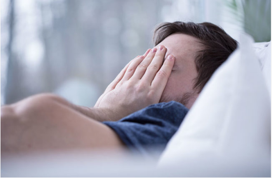

Why Am I Panicking in My Sleep?
It’s 3 a.m. and you’re wide awake. It’s not because you had too much coffee or need to use the bathroom. You’re up because a panic attack jolted you out of your sleep. You’re sweating, breathing hard, your heart is racing and you can’t shake the panic or dread you’re feeling in that moment. Why did this happen and is there any way to prevent this going forward? Clinical psychologist Scott Bea, PsyD, explains why nighttime panic attacks occur and gives us some ways to possibly manage them.
How common are nighttime panic attacks?
“They’re pretty common and the majority of people who have been diagnosed with panic disorder have probably experienced nocturnal panic attacks,” says Dr. Bea. While anxiety is thought to be a component of sleep panic attacks, other stressors can trigger them. “The absolute cause of panic attacks is pretty unknown at this point, but people who experience them may have histories of panic disorder, other anxiety disorders or behavioral health concerns that might be causing stress in general.” Dr. Bea adds that when people feel panicked, it’s very common that they might be experiencing situations in their life where they feel relatively trapped. “It could be occupationally, it could be in a relationship or in some other role that they’re playing. It’s not uncommon to see correlates of that sort of tension in people who are having nighttime panic attacks. However, these types of panic attacks aren’t limited to people with a history of anxiety. They also aren’t rare. About 18% of panic attacks that people experience seem to occur at night.”
Why do sleep panic attacks occur?
As Dr. Bea mentioned before, the cause of nighttime panic attacks is relatively unknown, but it seems like they’re a manifestation of stress. “Sleep panic attacks might reflect other stressors’ arousal in the body. It’s believed that this stress can be transmitted through genetic predispositions. This just tells you that our brains and bodies are active even when we’re sleeping.”
Can nighttime panic attacks be prevented?
According to Dr. Bea, one of the characteristics of true panic is that it occurs spontaneously — like a bolt of lightning across a blue sky. While we can’t prevent sleep panic attacks, he says that we can develop more effective mechanisms for coping with the stressors in our lives. “You might increase exercise or start a mindfulness practice. Overall, it doesn’t hurt to actively develop coping strategies. However, understand that doing these things may or may not influence the experience of a nighttime panic attack.” What’s another thing you can do to lessen the intensity of a sleep panic attack? Normalize the experience. Dr. Bea explains. “These experiences feel threatening and dangerous. You fear the worst when your heart’s racing, you’re short of breath, you’re trembling and you have a sense of impending doom or feel like you’re losing control,” he says. As frightening as the experience is, it’s safe. “Of course, when we have a catastrophic thought or appraisal of the event, it tends to drive more panic — it gets our body aroused. Learn to normalize that experience, to notice the sensations — but don’t try to fix them.” Dr. Bea compares it to being in quicksand. “If you end up in quicksand, it’s a really good idea to just be still. If you move, it only makes things worse. With stressful events, it’s very hard to not want to fix those circumstances, but if you try and fix them, it tends to activate the primitive fight or flight parts of our brain, so the arousal and distress usually continue for a while.” After a sleep panic attack, you’re not going to recover quickly and go right back to sleep. Dr. Bea recommends getting up and going into another room to do a relaxing activity (KEYWORD: RELAXING). No catching up on work or paying bills. Do something that will help you calm down until you’re able to go back to sleep.
How you manage daytime panic attacks might help you at night
Dr. Bea says the stress management techniques that you rely on during the day can help you recover from sleep panic attacks. While there’s no surefire method, he says that normalizing the experience regardless of when it occurs can make a huge difference. The purpose of this is to get to a place where you no longer feel threatened or disturbed by the panic attack. Thinking about how you feel after a stressful event is an observational strategy that keeps you from trying to fix the experience. When you don’t try to fix things, the sensations in your body are going to pass pretty quickly. “If you’re driving in your car and someone cuts you off, you’re going to jerk the wheel to avoid the collision. Your brain and body are going to be activated very quickly so even though you’ve avoided danger, you’re still going to feel on edge,” he says. “But if you continue to drive and simply notice the sensations in your body, they’ll dissipate on their own. The same strategy can be used in the midst of a panic episode. Simply noticing the sensations, perhaps rating the discomfort then noticing the remaining sensations can be much more useful than taking any steps to ‘fix’ the panicky feeling.”
Does sleep apnea trigger nighttime panic attacks?
Dr. Bea says that panic is not necessarily triggered by sleep apnea. “Sleep panic attacks tend to happen during certain stages of sleep. And they’re not related to sleep terrors. Sleep terrors occur in different phases of sleep as well. However, sleep troubles can create stress. Any stressor that’s acting on you can potentially cause your brain and body to be a little bit more aroused.”
Other treatment options for sleep panic attacks
If sleep panic attacks are happening quite often, medications can help as well as cognitive behavioral therapy, talk therapy or mindfulness-based therapies. The one thing that you don’t want to do is hit the bottle for relief. “Alcohol can accelerate heart rate and get our bodies kind of aroused. If you’re drinking alcohol late in the evening, that could be a particularly predisposing sort of thing for panic. With people who are anxious and panicky, if they overuse alcohol, they often feel very anxious when they wake up. So alcohol could be a contributing factor for panic attacks with some individuals.”